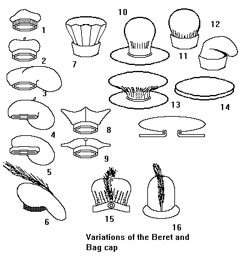

Berets/Bagcaps and Flat Caps

- Merovingian (8th century)
- 8th century
- Swedish (1440)
- Basque?
- English Bagcap (15th century)
- French White Felt hat (15th century)
- Italian (c1440)
- Italian Birretta (16th century)
- Beretta (16th century)
- Flemish/Dutch (1430)
- Venetian Velvet (15th century)
- Italian (1440)
- Two views of the construction of the "flat cap"
- "Flat cap"
- English (1380)
- Flemish/Dutch (1460)
Some Headwear of the Middle Ages - Berets/Bagcaps and Flat Caps, by I. Marc
Carlson. Copyright 1996.